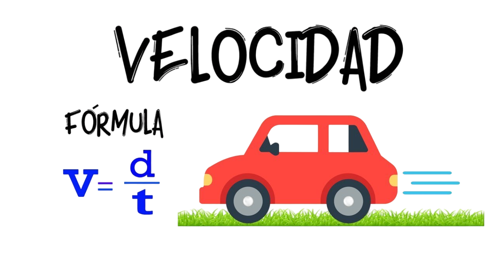

Velocidad
La velocidad es una magnitud física que indica el cambio de posición de un objeto en un tiempo determinado. Es un vector, lo que significa que incluye tanto la rapidez como la dirección en la que se mueve. Fórmula básica: Velocidad = Desplazamiento / Tiempo Ejemplo: Un automóvil que recorre 100 km hacia el norte en 2 horas tiene una velocidad de 50 km/h al norte
